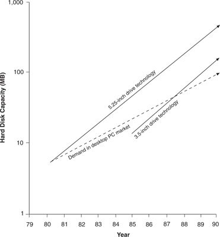
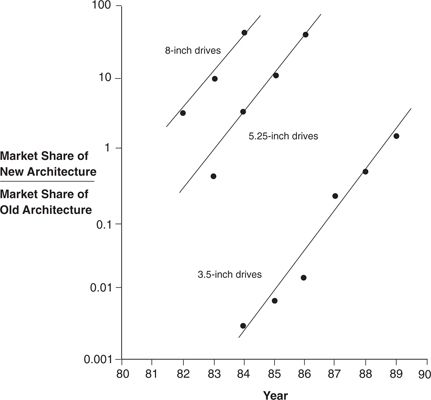

The phenomenon of performance oversupply is charted in Figure 9.1, an extract from Figure 1.7. It shows that by 1988, the capacity of the average 3.5-inch drive had finally increased to equal the capacity demanded in the mainstream desktop personal computer market, and that the capacity of the average 5.25-inch drive had by that time surpassed what the mainstream desktop market demanded by nearly 300 percent. At this point, for the first time since the desktop market emerged, computer makers had a choice of drives to buy: The 5.25-and 3.5-inch drives both provided perfectly adequate capacity.
What was the result? The desktop personal computer makers began switching to 3.5-inch drives in droves. Figure 9.2 illustrates this, using a substitution curve format in which the vertical axis measures the ratio of new-to old-technology units sold. In 1985 this measure was .007, meaning that less than 1 percent (.0069) of the desktop market had switched to the 3.5-inch format. By 1987, the ratio had advanced 0.20, meaning that 16.7 percent of the units sold into this market that year were 3.5-inch drives. By 1989, the measure was 1.5, that is, only four years after the 3.5-inch product had appeared as a faint blip on the radar screen of the market, it accounted for 60 percent of drive sales.
Why did the 3.5-inch drive so decisively conquer the desktop PC market? A standard economic guess might be that the 3.5-inch format represented a more cost-effective architecture: If there were no longer any meaningful differentiation between two types of products (both had adequate capacity), price competition would intensify. This was not the case here, however. Indeed, computer makers had to pay, on average, 20 percent more per megabyte to use 3.5-inch drives, and yet they still flocked to the product. Moreover, computer manufacturers opted for the costlier drive while facing fierce price competition in their own product markets. Why?
Performance oversupply triggered a change in the basis of competition. Once the demand for capacity was satiated, other attributes, whose performance had not yet satisfied market demands, came to be more highly valued and to constitute the dimensions along which drive makers sought to differentiate their products. In concept, this meant that the most important attribute measured on the vertical axis of figures such as 8.1 changed, and that new trajectories of product performance, compared to market demands, took shape.
Figure 9.1 Intersecting Trajectories of Capacity Demanded versus Capacity Supplied in Rigid Disk Drives

Source: Data are from various issues of Disk/Trend Report.
Figure 9.2 Substitution of 8-, 5.25-, and 3.5-Inch Drives of 30 to 100 MB

Source: Data are from various issues of Disk/Trend Report.
Specifically, in the desktop personal computer marketplace between 1986 and 1988, the smallness of the drive began to matter more than other features. The smaller 3.5-inch drive allowed computer manufacturers to reduce the size, or desktop footprint, of their machines. At IBM, for example, the large XT/AT box gave way to the much smaller PS1/PS2 generation machines.
For a time, when the availability of small drives did not satisfy market demands, desktop computer makers continued to pay a hefty premium for 3.5-inch drives. In fact, using the hedonic regression analysis described in chapter 4, the 1986 shadow price for a one-cubic-inch reduction in the volume of a disk drive was $4.72. But once the computer makers had configured their new generations of desktop machines to use the smaller drive, their demand for even more smallness was satiated. As a result, the 1989 shadow price, or the price premium accorded to smaller drives, diminished to $0.06 for a one-cubic-inch reduction.
Generally, once the performance level demanded of a particular attribute has been achieved, customers indicate their satiation by being less willing to pay a premium price for continued improvement in that attribute. Hence, performance oversupply triggers a shift in the basis of competition, and the criteria used by customers to choose one product over another changes to attributes for which market demands are not yet satisfied.
Figure 9.3 summarizes what seems to have happened in the desktop PC market: The attribute measured on the vertical axis repeatedly changed. Performance oversupply in capacity triggered the first redefinition of the vertical axis, from capacity to physical size. When performance on this new dimension satisfied market needs, the definition of performance on the vertical axis changed once more, to reflect demand for reliability. For a time, products offering competitively superior shock resistance and mean time between failure (MTBF) were accorded a significant price premium, compared to competitive offerings. But as MTBF values approached one million hours, 1 the shadow price accorded to an increment of one hundred hours MTBF approached zero, suggesting performance oversupply on that dimension of product performance. The subsequent and current phase is an intense price-based competition, with gross margins tumbling below 12 percent in some instances.